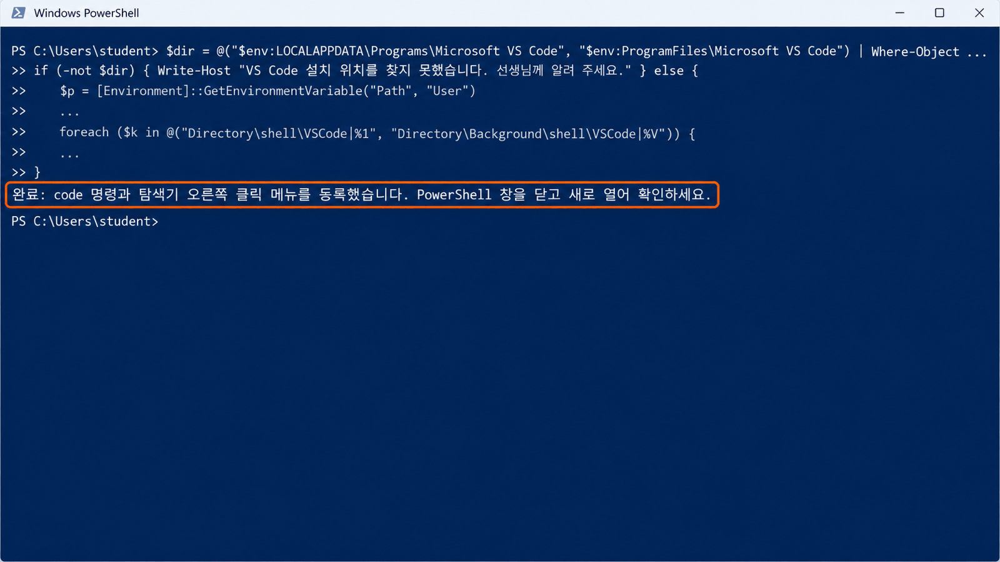
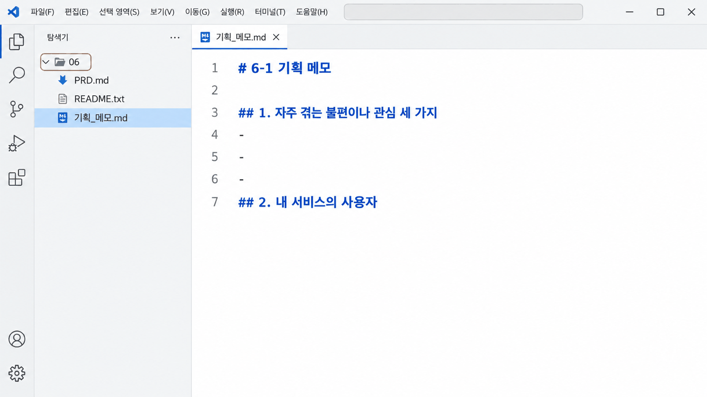
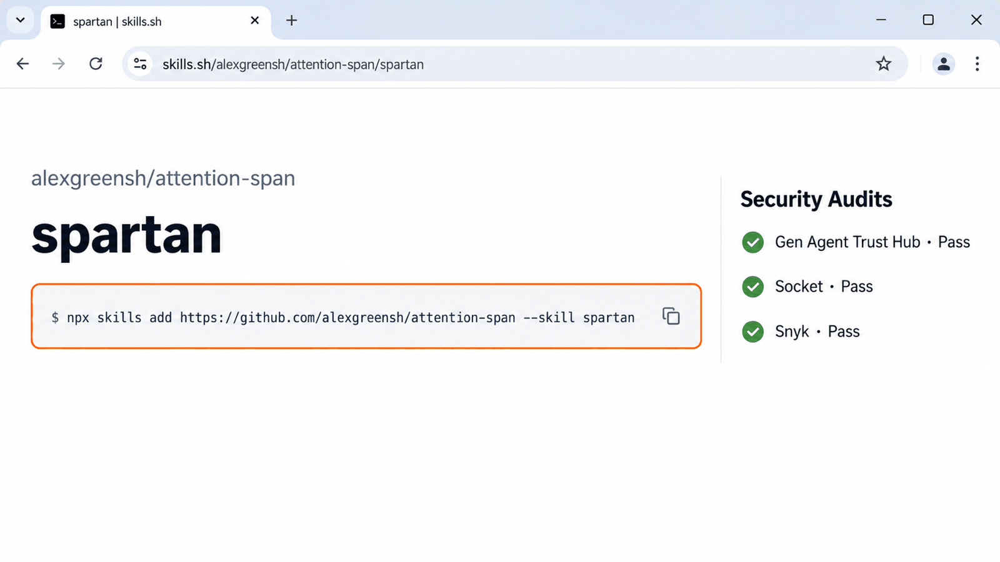
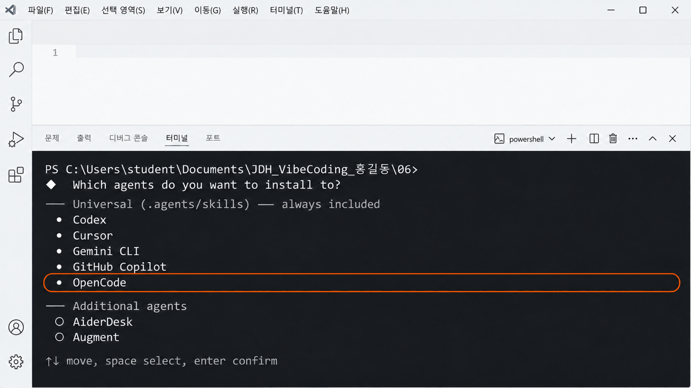
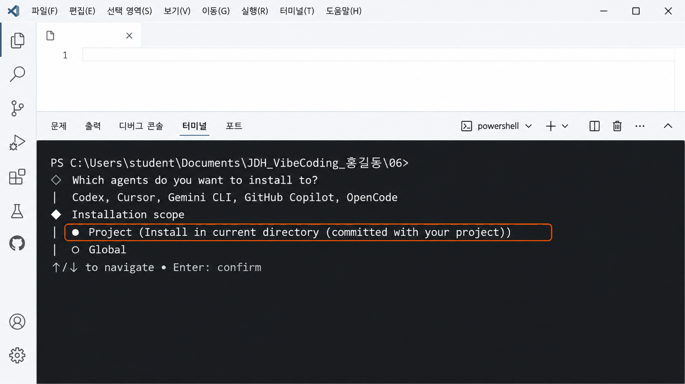
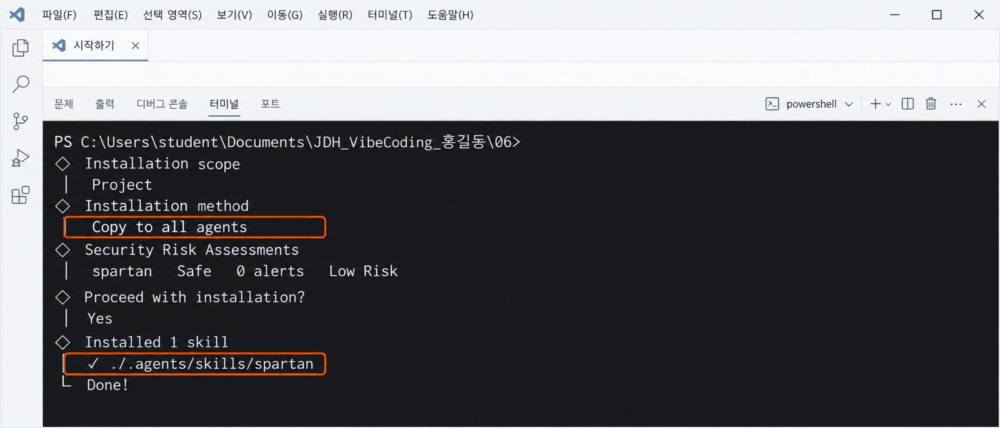
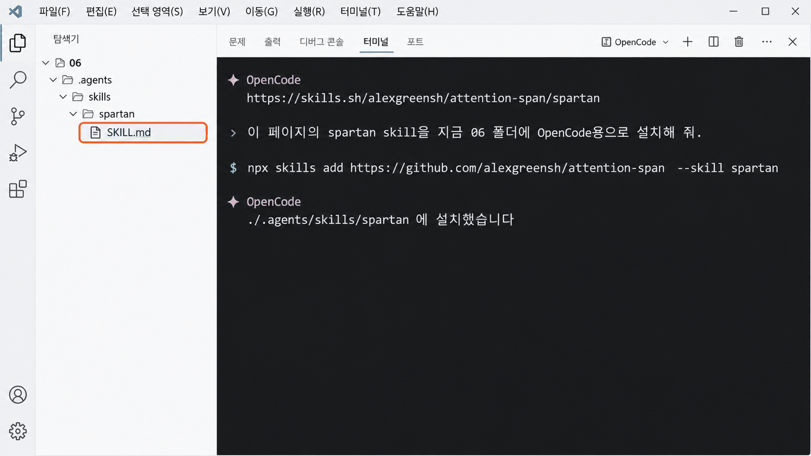

서비스 기획의 기초服务策划基础
작은 서비스를 만들지 정합니다.为谁、在什么情况下、能做什么，
先定下要做的这个小服务。
기능이 스무 개인 계획有二十个功能的计划
처음 계획을 세우면 「로그인, 채팅, 사진, 랭킹…」처럼 기능부터 늘어놓기 쉽습니다. 그런데 누가 언제 쓰는지 정하지 않으면 무엇이 완성인지 아무도 모릅니다. 오늘은 내 서비스의 뼈대를 메모 여섯 칸에 적고, AI와 함께 다듬습니다.第一次做计划时，很容易先列一堆功能，像「登录、聊天、照片、排行榜……」。可是没定下谁、什么时候用，就没人知道做到哪儿算完成。今天把自己服务的骨架写进备忘的六栏，再和 AI 一起修改。
누구를 위해, 어떤 상황에서,
무엇을 할 수 있는 작은 서비스를 만들 것인가?为谁、在什么情况下，
要做一个能做什么的小服务？
VS Code의 code 명령이 등록되어 있는지 본다看看 VS Code 的 code 命令有没有注册
먼저 Windows의 PowerShell 창을 열고 code 명령이 되는지 확인합니다. 이 명령이 등록되어 있으면 Windows 탐색기에서 폴더를 마우스 오른쪽 단추로 눌러 Code(으)로 열기로 바로 열 수 있습니다.先打开 Windows 的 PowerShell 窗口，确认 code 命令能不能用。注册好了的话，在 Windows 资源管理器里右键单击文件夹，用 Code(으)로 열기（通过 Code 打开）就能直接打开。
- 화면 아래 시작 단추를 누르고
powershell을 입력한 뒤 Windows PowerShell을 연다.点击屏幕下方的 시작（开始）按钮，输入powershell，打开 Windows PowerShell。 - 아래 명령을 붙여 넣고 Enter를 누른다.粘贴下面的命令，按 Enter。
1.로 시작하는 버전 번호가 나오면 끝이다. 다음 쪽은 건너뛴다. 「code」 용어가 인식되지 않는다고 나오면 다음 쪽으로 간다.出现以1.开头的版本号就好了，跳过下一页。提示无法识别「code」时，翻到下一页。
code --version
code 명령을 PowerShell로 등록한다用 PowerShell 注册 code 命令(이어서)（续）
아래 명령을 복사해 앞 쪽에서 연 PowerShell 창에 붙여 넣고 Enter를 누릅니다. code 명령과 탐색기 오른쪽 클릭 메뉴 Code(으)로 열기가 함께 등록됩니다.复制下面的命令，粘贴到前一页打开的 PowerShell 窗口里，按 Enter。code 命令和资源管理器右键菜单 Code(으)로 열기（通过 Code 打开）会一起注册。
$dir = @("$env:LOCALAPPDATA\Programs\Microsoft VS Code", "$env:ProgramFiles\Microsoft VS Code") | Where-Object { Test-Path "$_\Code.exe" } | Select-Object -First 1
if (-not $dir) { Write-Host "VS Code 설치 위치를 찾지 못했습니다. 선생님께 알려 주세요." } else {
$p = [Environment]::GetEnvironmentVariable("Path", "User")
if (("$p" -split ";") -notcontains "$dir\bin") {
[Environment]::SetEnvironmentVariable("Path", ("$p;$dir\bin").Trim(";"), "User")
}
foreach ($k in @("Directory\shell\VSCode|%1", "Directory\Background\shell\VSCode|%V")) {
$key, $arg = $k -split "\|"
$key = "HKCU:\Software\Classes\$key"
New-Item -Path "$key\command" -Force | Out-Null
Set-ItemProperty -Path $key -Name "(default)" -Value "Code(으)로 열기"
Set-ItemProperty -Path "$key\command" -Name "(default)" -Value "`"$dir\Code.exe`" `"$arg`""
}
Write-Host "완료: code 명령과 탐색기 오른쪽 클릭 메뉴를 등록했습니다. PowerShell 창을 닫고 새로 열어 확인하세요."
}$dir = @("$env:LOCALAPPDATA\Programs\Microsoft VS Code", "$env:ProgramFiles\Microsoft VS Code") | Where-Object { Test-Path "$_\Code.exe" } | Select-Object -First 1
if (-not $dir) { Write-Host "找不到 VS Code 的安装位置。请告诉老师。" } else {
$p = [Environment]::GetEnvironmentVariable("Path", "User")
if (("$p" -split ";") -notcontains "$dir\bin") {
[Environment]::SetEnvironmentVariable("Path", ("$p;$dir\bin").Trim(";"), "User")
}
foreach ($k in @("Directory\shell\VSCode|%1", "Directory\Background\shell\VSCode|%V")) {
$key, $arg = $k -split "\|"
$key = "HKCU:\Software\Classes\$key"
New-Item -Path "$key\command" -Force | Out-Null
Set-ItemProperty -Path $key -Name "(default)" -Value "Code(으)로 열기"
Set-ItemProperty -Path "$key\command" -Name "(default)" -Value "`"$dir\Code.exe`" `"$arg`""
}
Write-Host "完成：已注册 code 命令和资源管理器右键菜单。请关掉 PowerShell 窗口，重新打开后确认。"
}code 명령을 PowerShell로 등록한다用 PowerShell 注册 code 命令(이어서)（续）
붙여 넣고 Enter를 누르면 아래 그림처럼 마지막 줄에 완료가 나옵니다. 빨간 글자가 나오거나 「VS Code 설치 위치를 찾지 못했습니다」가 나오면 화면을 그대로 두고 손을 듭니다.粘贴后按 Enter，会像下图那样在最后一行出现完成。如果出现红字，或出现「找不到 VS Code 的安装位置」，就保持画面不动，举手。

완료가 나오면 PowerShell 창을 닫고 새로 연 뒤 code --version을 다시 확인합니다. VS Code가 열려 있었다면 VS Code도 닫았다가 다시 엽니다. 탐색기의 Code(으)로 열기는 Windows 11에서 오른쪽 클릭 메뉴의 추가 옵션 표시 안에 있습니다.出现完成后，关掉 PowerShell 窗口再重新打开，再确认一次 code --version。如果 VS Code 开着，也要关掉再重新打开。在 Windows 11 里，资源管理器的 Code(으)로 열기 在右键菜单的 추가 옵션 표시（显示更多选项）里。
06 폴더를 열고 메모 파일을 준비한다打开 06 文件夹，准备好备忘文件
오늘 쓰는 글은 모두 06 폴더의 기획_메모.md 파일에 적습니다. 자료를 내려받아 VS Code로 폴더를 엽니다.今天写的内容，都写在 06 文件夹的 기획_메모.md（规划备忘）文件里。下载资料，用 VS Code 打开文件夹。
06 폴더가 나옵니다. JDH_VibeCoding_자기이름 안에 넣습니다. 6-2에서도 같은 폴더를 씁니다.解压后会出现 06 文件夹。把它放进 JDH_VibeCoding_자기이름 文件夹（将“자기이름”换成自己的姓名）。6-2 也用这个文件夹。- 압축을 풀어 나온
06폴더를JDH_VibeCoding_자기이름안에 넣는다.把解压出来的06文件夹放进JDH_VibeCoding_자기이름里。 06폴더를 마우스 오른쪽 단추로 누르고 Code(으)로 열기를 고른다. 메뉴가 없으면 VS Code에서 파일 → 폴더 열기로06폴더 자체를 고른다.右键单击06文件夹，选择 Code(으)로 열기（通过 Code 打开）。没有这个菜单的话，在 VS Code 中用 파일 → 폴더 열기（文件 → 打开文件夹）选中06文件夹本身。- 왼쪽 탐색기 맨 위에
06이 보이는지 확인한다. 한 단계 위 폴더가 보이면 다시 연다.确认左侧资源管理器最上方显示的是06。显示的是上一层文件夹就重新打开。 - 탐색기에서
기획_메모.md를 눌러 연다.在资源管理器中点击기획_메모.md打开它。
06 폴더를 열고 메모 파일을 준비한다打开 06 文件夹，准备好备忘文件(이어서)（续）
그림처럼 탐색기 맨 위에 06이 보이고 메모 파일이 열리면 준비가 끝난 것입니다. 메모에는 번호가 붙은 칸 여섯 개가 있습니다.像图中那样，资源管理器最上方显示 06，备忘文件打开了，就准备好了。备忘里有六个带编号的栏目。

기획_메모.md。AI에게 일하는 방식을 미리 알려 주는 skill预先告诉 AI 做事方式的 skill 핵심核心
5주차에 AI의 답이 너무 길어서 「짧게 줄여 줘」를 몇 번씩 보낸 사람이 많았습니다. 매번 하던 그 부탁을 파일 하나에 적어 두는 방법이 있습니다. 그 파일이 skill입니다.第 5 周时，很多同学因为 AI 的回答太长，一次次发「请缩短一点」。有一种办法，能把每次都要说的请求写进一个文件。这个文件就是 skill。
- skill은 AI에게 어떤 방식으로 일할지를 적어 둔 파일(
SKILL.md)입니다. 오늘 설치할 spartan은 「결론부터, 짧게」 답하게 합니다.skill 是写好 AI 按什么方式做事的文件（SKILL.md）。今天要装的 spartan 会让 AI「先说结论，说短一点」。 - skill은 말투만이 아니라 AI가 어떤 순서로, 무엇을 신경 쓰며 일할지까지 바꿉니다. 다만 무엇을 만들지는 내가 정합니다.skill 不只改变说话方式，还能改变 AI 按什么顺序、注意什么来做事。不过要做什么由自己定。
| skills.sh에서 많이 쓰는 skillskills.sh 上常用的 skill | AI가 이렇게 일한다AI 会这样做事 |
|---|---|
find-skillsvercel-labs/skills | 하고 싶은 일을 말하면 그 일에 맞는 skill을 찾아 준다.说出想做的事，它会帮你找合适的 skill。 |
frontend-designanthropics/skills | 웹 화면을 만들 때 글꼴·색·배치를 신경 써서 뻔하지 않게 디자인한다. 다음 시간 목업과 닮았다.做网页画面时注意字体、颜色、排版，设计得不落俗套。和下一课时的模型很像。 |
spartanalexgreensh/attention-span | 결론부터, 꼭 필요한 줄만 짧게 답한다. 오늘 설치하는 skill이다.先说结论，只用必要的几行简短回答。是今天要安装的 skill。 |
skills.sh에서 spartan을 찾는다在 skills.sh 上找到 spartan(이어서)（续）
오늘 쓸 skill은 spartan입니다. 답의 첫 줄에 결론을 쓰고 꼭 필요한 줄만 남기게 하는 skill입니다. 다른 사람이 만들어 공개한 skill은 skills.sh라는 사이트에 모여 있습니다. 먼저 사이트에서 spartan을 찾아, 설치하기 전에 믿고 써도 되는지 확인합니다.今天用的 skill 叫 spartan，它让回答第一行写结论，只留下必要的内容。别人做好并公开的 skill，都集中在一个叫 skills.sh 的网站上。先在网站上找到 spartan，安装之前确认它能不能放心使用。
- 브라우저에서
https://skills.sh에 들어간다.在浏览器中打开https://skills.sh。 - Search skills... 칸에
spartan을 입력한다.在 Search skills... 框里输入spartan。 - 결과에서 만든 곳이 alexgreensh/attention-span인 spartan을 누른다. 찾기 어려우면 spartan 페이지 바로 가기를 누른다.在结果中点击来源是 alexgreensh/attention-span 的 spartan。找不到的话，点 直接打开 spartan 页面。
- 페이지에서 설명, 설치 수, Security Audits(보안 검사) 결과를 읽는다.在页面上阅读说明、安装次数和 Security Audits（安全检查）结果。

방법 1 · 명령을 복사해 직접 설치한다方法 1 · 复制命令，自己安装
첫 번째 방법은 skills.sh 페이지의 설치 명령을 복사해 터미널에서 직접 실행하는 것입니다. 명령을 실행하면 설치 도구가 질문을 네 번 합니다. 질문마다 무엇을 고르는지에 따라 어디에 설치되는지가 달라지므로, 하나씩 읽고 고릅니다.第一种方法，是复制 skills.sh 页面上的安装命令，在终端里直接运行。运行后，安装工具会提问四次。每次选什么，决定了装到哪里，所以要逐个读懂再选。
- VS Code에서 터미널 → 새 터미널을 열고, 줄 끝이
…\06>인지 본다.在 VS Code 中打开 터미널 → 새 터미널（终端 → 新建终端），确认提示符结尾是…\06>。 - skills.sh에서 복사한 명령을 붙여 넣고 Enter를 누른다. 처음이면
Need to install the following packages가 나오는데,y를 누른다.粘贴从 skills.sh 复制的命令，按 Enter。第一次运行会出现Need to install the following packages，按y。
npx skills add https://github.com/alexgreensh/attention-span --skill spartan
2-1에서 npm이 막혔을 때와 같은 증상입니다. 2-1에서 쓴 Set-ExecutionPolicy -Scope CurrentUser -ExecutionPolicy RemoteSigned를 한 번 실행하고 새 터미널에서 다시 해 봅니다. 그래도 안 되면 방법 2로 설치합니다.和 2-1 里 npm 被拦住时是同样的症状。运行一次 2-1 用过的 Set-ExecutionPolicy -Scope CurrentUser -ExecutionPolicy RemoteSigned，在新终端里再试。还不行就用方法 2 安装。
첫 질문 · 어느 AI 도구에 설치할까第一个问题 · 装到哪个 AI 工具(이어서)（续）
첫 질문은 어느 AI 도구에 설치할지입니다. 위쪽 Universal 목록은 늘 함께 설치되는 도구이고, 그 안에 OpenCode가 이미 들어 있습니다. 아래쪽 목록에서는 아무것도 더 고르지 않고 Enter를 누릅니다.第一个问题是装到哪个 AI 工具。上面的 Universal 列表是一定会一起安装的工具，OpenCode 已经在里面了。下面的列表什么都不用再选，直接按 Enter。

설치 범위 · Project와 Global安装范围 · Project 与 Global(이어서)（续）
두 번째 질문은 설치 범위입니다. Project는 지금 연 06 폴더 안에만, Global은 이 컴퓨터 전체에 설치합니다. 우리는 Project를 고릅니다. 06 폴더 안에 생겨서 설치되었는지 눈으로 확인할 수 있습니다.第二个问题是安装范围。Project 只装在现在打开的 06 文件夹里，Global 装到整台电脑。我们选 Project。它出现在 06 文件夹里，能亲眼确认有没有装好。

설치 방식을 고르고 설치를 마친다选择安装方式，完成安装(이어서)（续）
세 번째 질문은 설치 방식이고, 네 번째는 정말 설치할지입니다. 컴퓨터에 따라 세 번째 질문이 나오지 않을 수도 있습니다. 나온다면 Copy to all agents를 고릅니다. Windows에서는 Symlink(바로 가기 방식)가 권한 문제로 실패할 수 있기 때문입니다.第三个问题是安装方式，第四个是确定要安装吗。有的电脑可能不会出现第三个问题。如果出现，就选 Copy to all agents。因为在 Windows 上，Symlink（快捷方式）可能会因为权限问题而失败。

Installed 1 skill이 나오면 탐색기에서 .agents\skills\spartan\SKILL.md를 열어 봅니다. 이 글이 바로 AI가 읽게 될 지시문입니다.出现 Installed 1 skill 后，在资源管理器里打开 .agents\skills\spartan\SKILL.md 看一看。这段文字就是 AI 将要读的指示。
방법 2 · OpenCode에게 링크를 주고 설치를 맡긴다方法 2 · 把链接交给 OpenCode，让它安装
두 번째 방법은 skills.sh 페이지의 주소를 OpenCode에게 주고 설치를 맡기는 것입니다. 명령을 몰라도 되지만, 그만큼 AI가 무엇을 했는지 내가 직접 확인해야 합니다. 시험해 보니 AI가 「파일을 만들었다」고 말해 놓고 실제로는 만들지 않은 일이 있었습니다.第二种方法，是把 skills.sh 页面的地址交给 OpenCode，让它来安装。不用懂命令，但相应地，AI 做了什么要自己亲眼确认。试的时候，出现过 AI 说「文件做好了」，实际上却没做的情况。
- skills.sh의 spartan 페이지에서 브라우저 주소창의 주소를 복사한다.在 skills.sh 的 spartan 页面，复制浏览器地址栏里的地址。
- VS Code 터미널에서 줄 끝이
…\06>인지 보고opencode를 입력해 연다.在 VS Code 终端里确认提示符结尾是…\06>，输入opencode打开。 - 아래 요청문을 보내고, 첫 줄에 복사한 주소를 붙인다.发送下面的请求，第一行粘上复制的地址。
- OpenCode가 명령을 실행해도 되는지 물으면 내용을 읽고 허락한다.OpenCode 询问能否运行命令时，读过内容后再允许。
https://skills.sh/alexgreensh/attention-span/spartan 이 페이지의 spartan skill을 지금 06 폴더에 OpenCode용으로 설치해 줘. 설치 범위는 Project로 해 줘. 다른 파일은 고치지 마. 끝나면 설치된 폴더 이름을 알려 줘.
https://skills.sh/alexgreensh/attention-span/spartan 请把这个页面上的 spartan skill 安装到现在的 06 文件夹里，给 OpenCode 用。安装范围选 Project。 不要修改其他文件。完成后告诉我安装到的文件夹名。
AI의 답을 믿지 말고 직접 확인한다不要只信 AI 的回答，要亲眼确认
OpenCode가 설치를 마쳤다고 답하면, 그 말을 믿기 전에 탐색기에서 결과를 직접 봅니다. 06 아래에 .agents\skills\spartan\SKILL.md가 있어야 설치된 것입니다. 없다면 AI의 답과 실제가 다른 것이므로, 무엇을 했는지 다시 물어봅니다.OpenCode 回答说安装好了时，先别急着相信，要在资源管理器里亲眼看结果。06 下面要有 .agents\skills\spartan\SKILL.md 才算装好。没有的话，说明 AI 的回答和实际不一样，要再问它到底做了什么。

spartan이 늘 적용되도록 기본값으로 만든다把 spartan 设为默认，让它一直生效
어느 방법으로 설치했든, 지금 상태로는 대화마다 /spartan을 입력해야 적용됩니다. 매번 부르지 않아도 되도록 06 폴더에 OpenCode 설정 파일 opencode.json을 만들고, 그 안에 「이 skill 파일을 늘 읽어라」라고 적어 둡니다. 이 파일은 AI에게 맡기지 않고 직접 만듭니다.不管用哪种方法安装，现在这样每次对话都得输入 /spartan 才生效。为了不用每次调用，在 06 文件夹里建一个 OpenCode 设置文件 opencode.json，在里面写上「一直读这个 skill 文件」。这个文件不交给 AI，自己来建。
- 탐색기에서
06폴더의 빈 곳을 마우스 오른쪽 단추로 누르고 새 파일을 고른 뒤 이름을opencode.json으로 한다.在资源管理器中右键单击06文件夹的空白处，选择 새 파일（新建文件），命名为opencode.json。 - 아래 내용을 복사해 붙여 넣고
Ctrl+S로 저장한다.复制下面的内容粘贴进去，按Ctrl+S保存。 - OpenCode 입력칸에
/exit를 입력해 닫고, 다시opencode로 연다. 설정은 OpenCode를 열 때 한 번 읽기 때문이다.在 OpenCode 输入框里输入/exit关掉它，再用opencode重新打开。因为设置只在打开 OpenCode 时读一次。
{
"$schema": "https://opencode.ai/config.json",
"instructions": [".agents/skills/spartan/SKILL.md"]
}opencode.json에 쉼표나 따옴표가 하나만 틀려도 OpenCode가 시작되지 않습니다. 직접 치지 말고 복사해 붙입니다. 열리지 않으면 이 파일을 지우고 다시 만듭니다.opencode.json 里只要错一个逗号或引号，OpenCode 就启动不了。不要手打，要复制粘贴。打不开的话，删掉这个文件重新建。
무엇이 달라졌는지 직접 물어본다亲自问一问，有什么不一样了
설치가 끝났으면 spartan이 정말 적용되었는지 OpenCode에게 직접 물어봅니다. 아래 질문을 보내고, 5주차에 받았던 긴 답과 무엇이 다른지 봅니다.装好以后，直接问 OpenCode，看看 spartan 是不是真的生效了。发送下面的问题，看看和第 5 周收到的长回答有什么不同。
spartan이 어떤 기능인지 알려 줘.
告诉我 spartan 是什么功能。
인사와 설명으로 시작한다 · 주의할 점과 다른 방법까지 길게 이어진다以问候和说明开头 · 注意事项和其他方法一直写下去
첫 줄에 결론이 나온다 · 꼭 필요한 줄만 남는다第一行就是结论 · 只留下必要的几行
opencode.json을 저장했는지 보고, OpenCode를 /exit로 닫았다가 다시 엽니다. 설정은 OpenCode를 열 때 읽습니다.看看 opencode.json 有没有保存，用 /exit 关掉 OpenCode 再重新打开。设置是在打开 OpenCode 时读取的。
기획의 뼈대는 여섯 칸이다策划的骨架就是六栏 핵심核心
기획은 누가, 언제, 무엇을 하려고 쓰는 서비스인지 글로 정하는 일입니다. 뼈대는 아래 여섯 칸이면 충분합니다. 이 메모가 다음 시간에 PRD가 되고, 8회 수행평가 2로 제출됩니다.策划，就是用文字定下这是谁、在什么时候、为了做什么而用的服务。骨架有下面六栏就够了。这份备忘下一课时会变成 PRD，第 8 次课作为实践考核 2 提交。
| 메모 칸备忘栏目 | 한 줄로 답할 질문用一行回答的问题 |
|---|---|
| 1. 불편1. 不便 | 요즘 실제로 겪은 불편은? 그중 하나를 고른다最近真实遇到的不便是什么？从中选一个 |
| 2. 사용자2. 用户 | 누가 언제 쓰는가?谁在什么时候用？ |
| 3. 목적 한 문장3. 目的一句话 | 나는 ___한 사용자가 ___할 수 있도록 돕는 ___을 만든다我要做一个 ___，帮助 ___ 的用户能够 ___ |
| 4. 대표 사용 흐름4. 代表性使用流程 | 열고 → 넣고 → 누르고 → 결과를 보는 3~4단계는?打开 → 输入 → 按下 → 看结果，3~4 步是什么？ |
| 5. 핵심 기능5. 核心功能 | 이것 하나가 안 되면 서비스가 아닌 기능은?少了它就不成服务的那个功能是什么？ |
| 6. 완성 기준6. 完成标准 | 해 보면 맞는지 알 수 있는 문장 2개는?一试就知道对不对的 2 句话是什么？ |
칸마다 완벽하지 않아도 됩니다. 한 줄씩 적고 AI와 함께 고쳐 나갑니다.每栏不必完美。各写一行，再和 AI 一起改。
① 먼저 내 생각대로 여섯 칸을 적는다① 先按自己的想法写好六栏 핵심核心
AI에게 맡기기 전에 내가 먼저 씁니다. 처음부터 「기획해 줘」라고 하면 내 서비스를 내가 설명할 수 없게 됩니다. 기획_메모.md의 여섯 칸에 한 줄씩 적고 Ctrl+S로 저장합니다.交给 AI 之前，先自己写。一开始就说「帮我策划」，自己的服务自己就说不清了。在 기획_메모.md 的六栏里各写一行，按 Ctrl+S 保存。
기획_메모.md · 每栏写一行的示例## 1. 자주 겪는 불편이나 관심 세 가지 - 이 가운데 고른 것: 시험 전날 무엇부터 외울지 모르겠다 ## 2. 내 서비스의 사용자 - 시험 전날 무엇부터 외울지 정하기 어려운 학생 ## 3. 목적 한 문장 - 나는 시험 전날 무엇부터 외울지 정하기 어려운 학생이 외울 항목 하나를 무작위로 받아 연습하도록 돕는 웹 도구를 만든다. ## 5. 핵심 기능과 보조 기능 - 핵심 기능: 적어 둔 항목 가운데 하나를 무작위로 뽑는다 ## 6. 완성 기준 1. 항목을 적고 '하나 뽑기'를 누르면 항목 하나가 나타난다. 2. 항목 없이 누르면 "먼저 항목을 적어 주세요"가 나타난다.
## 1. 자주 겪는 불편이나 관심 세 가지 （三个不便） - 이 가운데 고른 것（选中的）: 考试前一天不知道先背什么 ## 2. 내 서비스의 사용자 （用户） - 考试前一天定不下先背什么的学生 ## 3. 목적 한 문장 （目的一句话） - 我要做一个网页小工具，帮助考试前一天定不下先背什么的学生，从要背的项目里随机抽一个来练习。 ## 5. 핵심 기능과 보조 기능 （核心功能） - 핵심 기능: 从写好的项目里随机抽一个 ## 6. 완성 기준 （完成标准） 1. 写好项目后按“抽一个”，会出现一个项目。 2. 没写项目就按，会出现“请先写下项目”。
- 탐색기에서
기획_메모.md를 마우스 오른쪽 단추로 누르고 미리 보기 열기(Open Preview)를 고른다.Ctrl+Shift+V를 눌러도 된다.在资源管理器中右键单击기획_메모.md，选择 미리 보기 열기（Open Preview，打开预览）。也可以按Ctrl+Shift+V。 #은 제목,-는 목록으로 보인다. 남이 읽는 모습으로 한 번 읽어 본다.#显示成标题，-显示成列表。用别人读到的样子读一遍。
「할 일 기록」, 「읽은 책 기록」, 「이야기 소재 만들기」, 「외울 것 하나 뽑기」 가운데 하나를 골라도 됩니다.从「待办记录」「读书记录」「故事素材生成」「随机抽一个要背的」里挑一个也可以。
② AI에게 메모를 읽히고 질문을 받는다② 让 AI 读备忘，向我提问 핵심核心
여섯 칸을 적었다면 AI에게 메모를 읽히고, 흐릿한 곳을 질문하고 제안하게 합니다. AI가 메모를 직접 고쳐도 괜찮습니다. 중요한 것은 AI가 묻고 고친 것을 내가 끝까지 읽는 것입니다. 아래 요청문을 복사해 OpenCode에 보냅니다.写好六栏后，让 AI 读备忘，对模糊的地方提问并提出建议。AI 直接修改备忘也没关系。重要的是，AI 问的、改的内容，自己要读到最后。复制下面的请求发给 OpenCode。
기획_메모.md 파일을 읽어 줘. 칸마다 흐릿하거나 서로 맞지 않는 곳을 쉬운 질문으로 하나씩 물어봐 줘. 고치면 좋을 점이 있으면 제안해 줘.
请读 기획_메모.md 文件。
逐栏用浅显的问题，把模糊或彼此对不上的地方一个一个问我。
有值得修改的地方就提出建议。③ 고칠지는 내가 정하고, 다시 묻는다③ 改不改由自己定，再问一次 핵심核心
AI의 질문과 예시 문장을 읽고, 맞다고 생각하는 것만 내 말로 고쳐 메모에 적습니다. 고친 뒤에는 같은 요청을 한 번 더 보내 봅니다. 이렇게 쓰고, 묻고, 고치기를 두세 번 되풀이하면 메모가 또렷해집니다.读 AI 的提问和示例句，只把自己认为对的部分用自己的话改进备忘。改完后再发一次同样的请求。像这样写、问、改重复两三次，备忘就会变清楚。
| AI가 이렇게 말하면AI 这样说时 | 이렇게 한다这样做 |
|---|---|
| 「사용자가 언제 쓰는지 불분명합니다」「不清楚用户什么时候用」 | 2번 칸에 「~할 때」를 넣어 고친다在第 2 栏补上「……的时候」 |
| 「로그인·공유 기능을 넣으면 좋겠습니다」「加上登录、分享功能会更好」 | 넣지 않는다. 로그인·결제·채팅은 이 수업에서 만들지 않는다不加。登录、支付、聊天这门课都不做 |
AI의 질문을 읽고 내 말로 고친다读 AI 的提问，用自己的话改
AI가 써 준 문장을 그대로 붙인다把 AI 写的句子直接粘贴
메모를 저장하고 다음 차시를 준비한다保存备忘，准备下一课时
오늘은 skill을 설치하고, AI와 함께 메모를 다듬었습니다. 다음 차시에는 이 메모로 PRD를 씁니다.今天装好了 skill，并和 AI 一起修改了备忘。下一课时用这份备忘写 PRD。
- VS Code 탭의
기획_메모.md이름 옆에 동그라미(●)가 없는지 본다. 있으면Ctrl+S를 누른다.看 VS Code 标签页上기획_메모.md名称旁边有没有圆点（●）。有的话按Ctrl+S。 - 탐색기에
.agents폴더와opencode.json이 있는지 본다. 다음 시간에도 spartan이 그대로 적용된다.确认资源管理器里有.agents文件夹和opencode.json。下一课时 spartan 也会照样生效。
- skill은 AI가 일하는 방식을 적어 둔 파일이다.skill 是写好 AI 做事方式的文件。
- 내가 먼저 쓰고, AI에게 질문을 받고, 고칠지는 내가 정한다.自己先写，让 AI 提问，改不改由自己定。